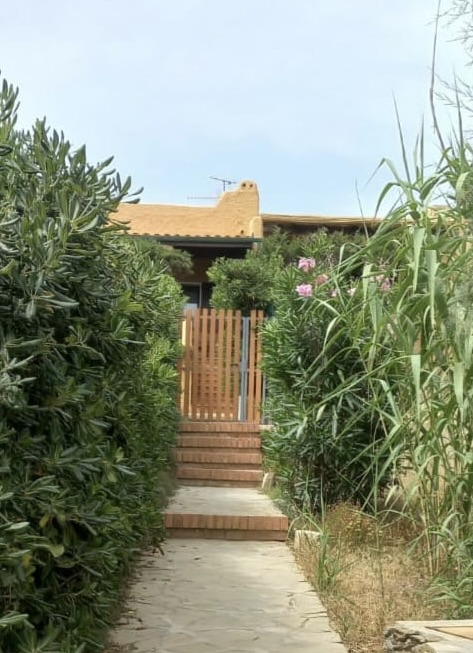

La vidéo ci-dessus montre comment rejoindre la maison depuis le bout de la plage "La Pelosa" dans la commune de Stintino jusqu'à l'adresse indiquée.
Stationnement et entrée
Cette image montre de quel côté se garer et de quel côté se trouve l'entrée de la maison.
À l'extérieur de la maison, il y aura un coffre-fort contenant les clés. Le code est 0202.

C'est l'entrée la maison est située au dernier étage, après la volée d'escaliers.
Instructions pour les services à domicile (Gaz)
C'est le robinet de gaz et il est situé dans la cuisine. Lorsqu'il est en position verticale, cela signifie que le gaz n'est pas en fonctionnement, tandis qu'en position horizontale, le gaz est en fonctionnement.
Avant d'utiliser la cuisine ou d'autres services qui nécessitent l'utilisation de gaz, vous devez vous assurer que celle-ci est ouverte.
Instructions pour les services à domicile (Chauffe-eau)
Avant d'utiliser l'eau chaude, vous devez vous assurer que le chauffe-eau est allumé.
Si ce dernier est éteint, il peut être allumé à partir du bouton approprié sur le mur de la salle de bain.
Collecte séparée des ordures
Vous devrez absolument effectuer une collecte séparée. Dans la maison, vous trouverez les méthodes de collecte et le calendrier.
Ce n'est qu'après l'heure du dîner que vous devrez laisser les poubelles avec les ordures correctes à l'extérieur de l'allée, près du bord de la route, et le matin, les opérateurs écologiques passeront pour ramasser les ordures.
Lorsque les opérateurs ont fini de ramasser les ordures, vous pouvez ramener le panier à la maison.
Au moment du départ, vous devrez sortir toutes les ordures (qui ne seront pas ramassées par les opérateurs écologiques) et vous devrez vous rendre au centre écologique local dont nous vous fournissons l'emplacement.
Horaires d'été
Du lundi au samedi
De 8h00 à 12h00
FERMÉ : dimanche et jours fériés.
Île écologique pour touristes de passage
Aux mois de juillet et août
dans la localité de Le Saline il sera mis en place
une île habitée uniquement pour
utilitaires sortants. Les temps de
l'ouverture aura lieu de 8h00 à
10h00 et de 16h00 à 18h00 tous les jours de la semaine.
Suite à son poste :